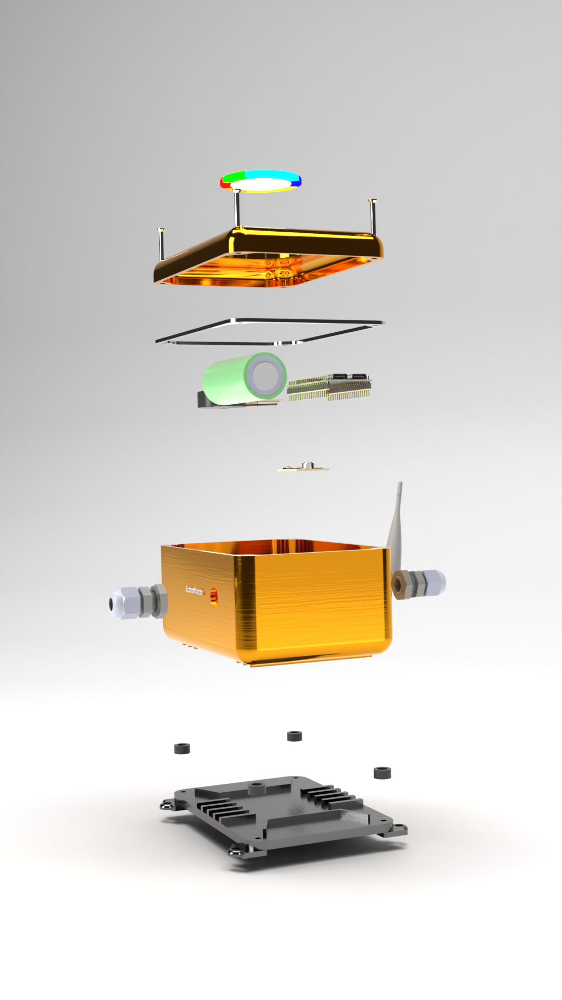
Sense
Sealed on the machine housing. MEMS mic and accelerometer listen continuously on-device — no permanent cloud link required.
EchoWatch is a sealed ESP32 edge node that listens to crushers, mills, and kilns, flags wear days before downtime, and routes the alert to the person who can act — with a local buzzer when the network is gone.
IP67 enclosure · ESP32-S3 edge node

Sealed on the machine housing. MEMS mic and accelerometer listen continuously on-device — no permanent cloud link required.
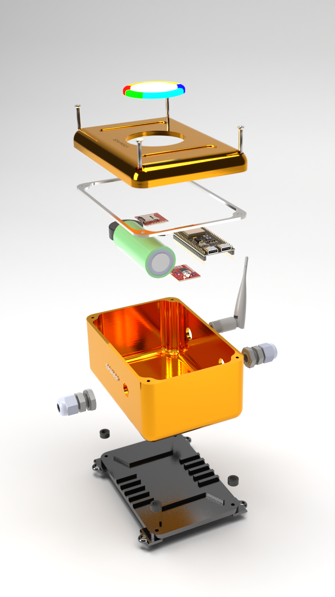
ESP32-S3 runs a lightweight autoencoder on that machine’s own healthy baseline — reconstruction error becomes the AHI risk score.
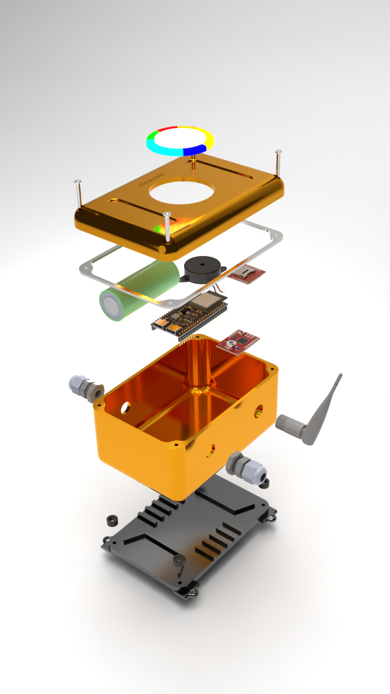
Confirmed anomalies hit the dashboard and the right lead. Network down? Local buzzer and GSM path still fire at the equipment.
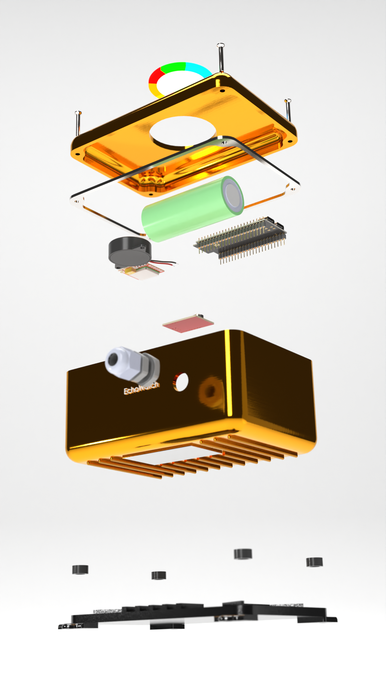
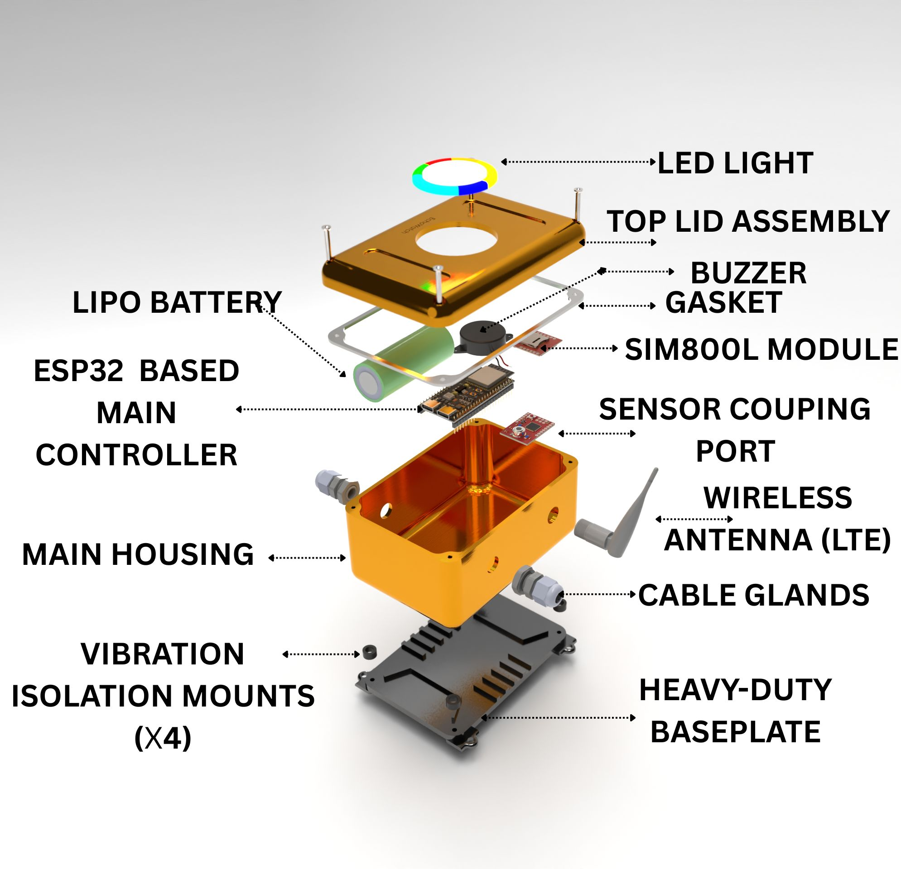
Board identity · EW-01
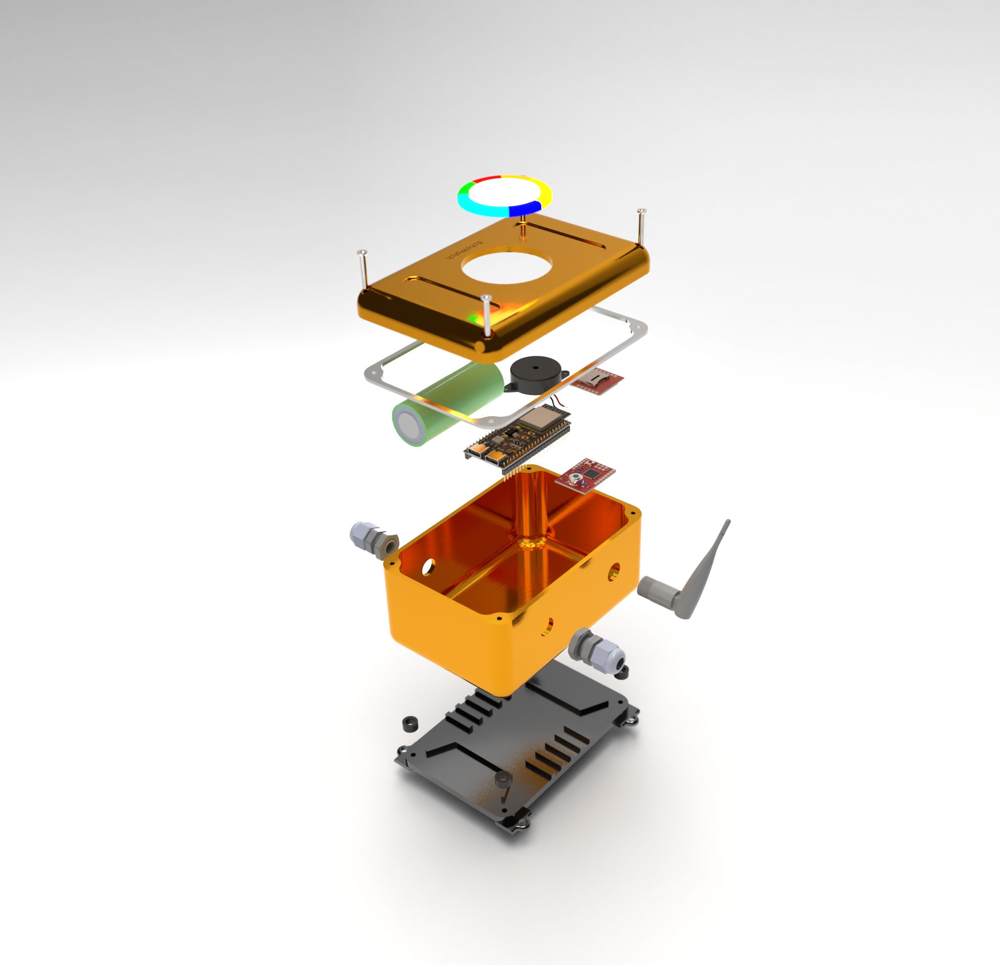
Industrial form factor for mounting next to rotating equipment — not a lab breadboard.
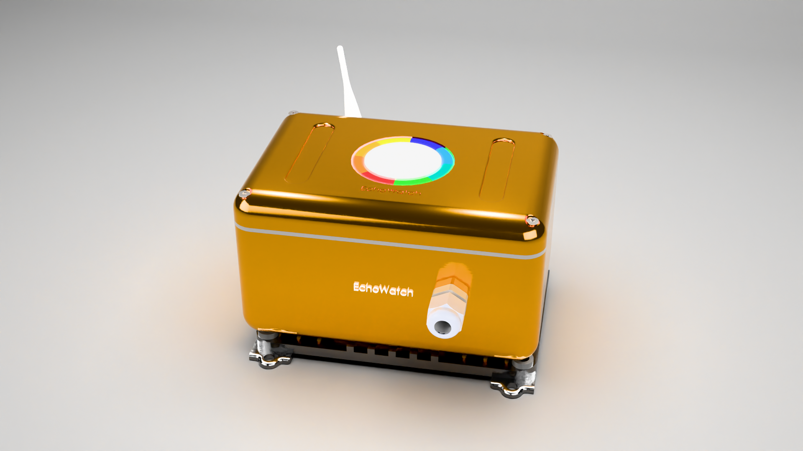
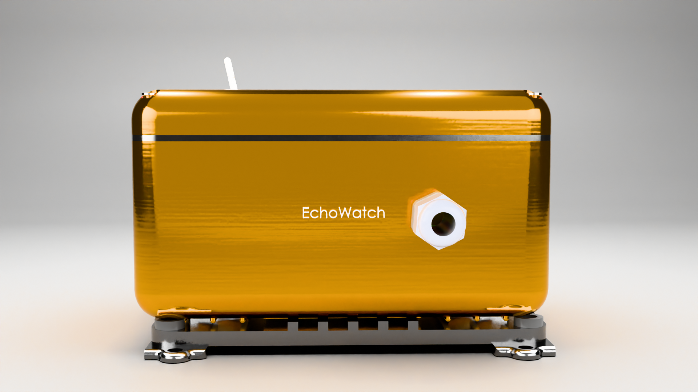
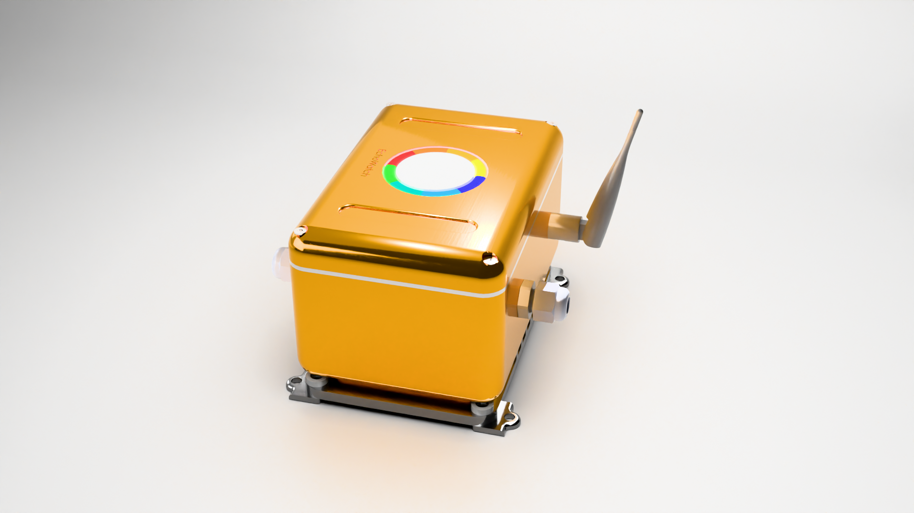
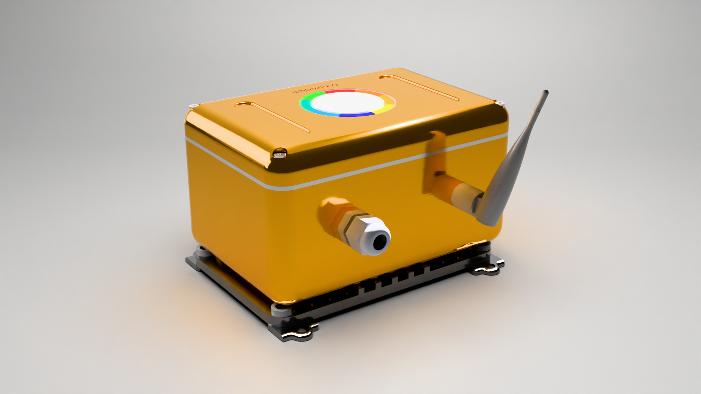
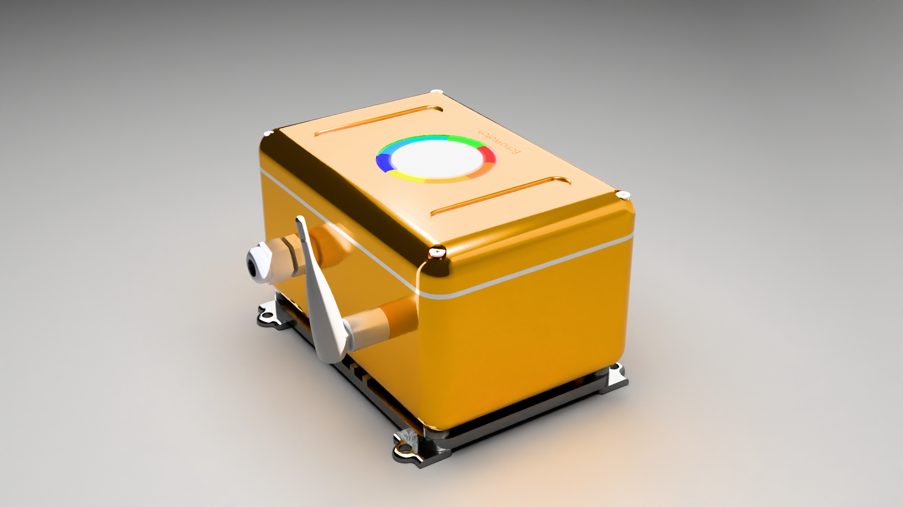
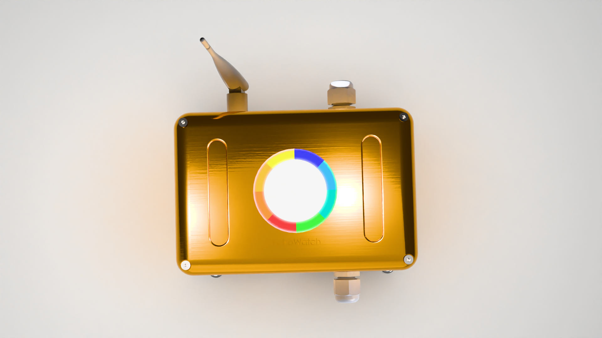
Six machines, AHI thresholds, and the offline buzzer path — plant-scoped login.